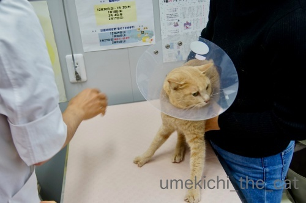
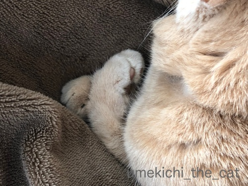
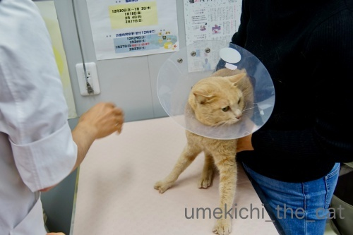
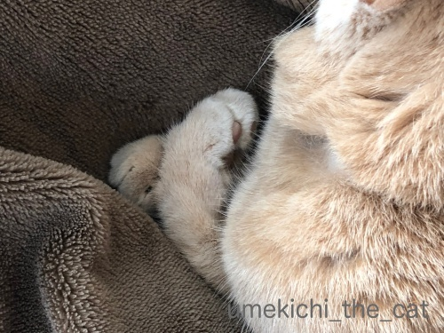

梅吉、マイクロチップを装着する。 [梅吉]
今月12日は梅吉の定期受診の日でした。
梅吉は中性脂肪値が高い体質なので（生活習慣ではありません）
２歳半頃から薬を飲ませています。
（経緯に興味がある方はお薬生活が始まった頃の記事か
タグの“病院”でご覧になってくださいね。）
この日はご機嫌が悪くて先生の顔を見るなり「シャーーーーッツ！！」。
採血した別室からも「うぉ〜ん！ フシャーーーッツ！！」と
派手な声が聞こえてきました(⌒-⌒;

採血から帰ってきたところ。あちのピンクの包帯がまぶしいw
採血結果は・・・
肝機能が下がっていたのは何よりだったんですが以前よりも中性脂肪値が上がっている。
そこで一年とちょっと飲み続けていたカルニチンという錠剤を別の薬に変えることになりました。

今度の薬はメトグルコという代謝を上げて脂肪を分解する水薬。
（私が飲みたいwww）
朝夕0.2ccずつ注射器で吸い上げてフードの上に垂らします。
錠剤を乳鉢ですりつぶす作業がなくなりました。
この薬、なめてみたらちょっと苦いのですが食欲大魔神の梅吉は気にせず食べてます![[手（チョキ）]](https://blog.ss-blog.jp/_images_e/87.gif)

って採血が終わって結果を聞いてもまだ診察台の上の梅吉。
この日はむしろここからがメイン。

エリカラをつけて
![[猫]](https://blog.ss-blog.jp/_images_e/101.gif) むちゃくちゃ いやなよかんー！
むちゃくちゃ いやなよかんー！

ぷすっと。
あにすんじゃー！
これで終了。マイクロチップが入りました。エリカラつけてから終わるまで５秒くらい？
採血よりずっと早く終わります。
先日テレビでマイクロチップは麻酔なしで入れられる、と聞いてんんん？
色々調べてみて病院で先生に確認するとその通りだとのお返事。
私はマイクロチップの装着は全身麻酔の上メスで皮膚を切って埋め込むものだと思っていました。
なので去勢手術の時にマイクロチップまで気が回らなかったことをとっても後悔していたのです。
が、今回偶然目にしたテレビのニュースで正しい情報を知りここ数年のモヤモヤが解決しました。
同時にちゃんと調べていなかった自分の不勉強も反省・・・

（環境省のHPよりお借りしました）
マイクロチップの大きさです。
これを注射器状のもので首の後ろにぷすっと刺して挿入。
装着後梅吉は全く気にする様子はなく
家に帰った後は元気に走り回って遊んでいました。
マイクロチップを入れたあたり、触っても全くわかりません。
マイクロチップについては体に異物を入れることに抵抗があったり
そこまでしなくてもという意見、その他さまざまな理由で反対されている方もいらっしゃいます。
飼い主さんの考え方はそれぞれです。
なのでお勧めしているわけではありません。
ただ、麻酔＆手術不要で装着できて（個体差にも寄ると思いますが）
装着後も影響は見られないことを知っていただきたく
実体験を元に記事にしてみましたm(_ _)m
麻酔が必要なら無理かな・・・と諦めていた方もいらっしゃるかもしれないし。
とっくに知っていたわ！という方がほとんどかと思いますけどw(⌒-⌒; )
マイクロチップの情報を読み取るリーダーの普及率は
残念なことに市町村によって差があるようです。
大阪では大阪市内の全保健所、市や府が管理する保護施設すべてにリーダーがあるそうです。
もしも災害などで梅吉とはぐれてしまっても
私たちの元に帰ってくる確率が格段に高くなったかな、と思っています。

とある日。

このお手手にニヤニヤする0(≧▽≦)0
 ↑ガブッと一押し↑
↑ガブッと一押し↑
梅吉は中性脂肪値が高い体質なので（生活習慣ではありません）
２歳半頃から薬を飲ませています。
（経緯に興味がある方はお薬生活が始まった頃の記事か
タグの“病院”でご覧になってくださいね。）
この日はご機嫌が悪くて先生の顔を見るなり「シャーーーーッツ！！」。
採血した別室からも「うぉ〜ん！ フシャーーーッツ！！」と
派手な声が聞こえてきました(⌒-⌒;

採血から帰ってきたところ。あちのピンクの包帯がまぶしいw
採血結果は・・・
肝機能が下がっていたのは何よりだったんですが以前よりも中性脂肪値が上がっている。
そこで一年とちょっと飲み続けていたカルニチンという錠剤を別の薬に変えることになりました。

今度の薬はメトグルコという代謝を上げて脂肪を分解する水薬。
（私が飲みたいwww）
朝夕0.2ccずつ注射器で吸い上げてフードの上に垂らします。
錠剤を乳鉢ですりつぶす作業がなくなりました。
この薬、なめてみたらちょっと苦いのですが食欲大魔神の梅吉は気にせず食べてます

って採血が終わって結果を聞いてもまだ診察台の上の梅吉。
この日はむしろここからがメイン。

エリカラをつけて

ぷすっと。
これで終了。マイクロチップが入りました。エリカラつけてから終わるまで５秒くらい？
採血よりずっと早く終わります。
先日テレビでマイクロチップは麻酔なしで入れられる、と聞いてんんん？
色々調べてみて病院で先生に確認するとその通りだとのお返事。
私はマイクロチップの装着は全身麻酔の上メスで皮膚を切って埋め込むものだと思っていました。
なので去勢手術の時にマイクロチップまで気が回らなかったことをとっても後悔していたのです。
が、今回偶然目にしたテレビのニュースで正しい情報を知りここ数年のモヤモヤが解決しました。
同時にちゃんと調べていなかった自分の不勉強も反省・・・

（環境省のHPよりお借りしました）
マイクロチップの大きさです。
これを注射器状のもので首の後ろにぷすっと刺して挿入。
装着後梅吉は全く気にする様子はなく
家に帰った後は元気に走り回って遊んでいました。
マイクロチップを入れたあたり、触っても全くわかりません。
マイクロチップについては体に異物を入れることに抵抗があったり
そこまでしなくてもという意見、その他さまざまな理由で反対されている方もいらっしゃいます。
飼い主さんの考え方はそれぞれです。
なのでお勧めしているわけではありません。
ただ、麻酔＆手術不要で装着できて（個体差にも寄ると思いますが）
装着後も影響は見られないことを知っていただきたく
実体験を元に記事にしてみましたm(_ _)m
麻酔が必要なら無理かな・・・と諦めていた方もいらっしゃるかもしれないし。
とっくに知っていたわ！という方がほとんどかと思いますけどw(⌒-⌒; )
マイクロチップの情報を読み取るリーダーの普及率は
残念なことに市町村によって差があるようです。
大阪では大阪市内の全保健所、市や府が管理する保護施設すべてにリーダーがあるそうです。
もしも災害などで梅吉とはぐれてしまっても
私たちの元に帰ってくる確率が格段に高くなったかな、と思っています。

とある日。

このお手手にニヤニヤする0(≧▽≦)0

カフェオレ色の梅吉

梅吉 2023年8月10日 永眠


梅吉と出会った譲渡会

犬猫の理由なき殺処分ゼロ
妄想広告
UMEKICHI 光

爆発的に早い！
時々攻撃的！
Thanks to Mr.Boss365
爆発的に早い！
時々攻撃的！
Thanks to Mr.Boss365